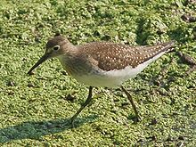
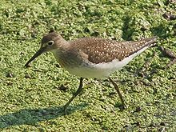

| Solitary Sandpiper | |
|---|---|
|  | |
| Conservation status | |
| Binomial name | |
| Tringa solitaria (Wilson, 1813) |
|
| Synonyms | |
|
Helodromas solitarius |
| Solitary Sandpiper | |
|---|---|
|  | |
| Conservation status | |
| Binomial name | |
| Tringa solitaria (Wilson, 1813) |
|
| Synonyms | |
|
Helodromas solitarius |
The Solitary Sandpiper (Tringa solitaria) is a small wader (shorebird). Its only close relative in the genus Tringa is the Green Sandpiper;[2] they both have brown wings with little light dots, and a delicate but contrasting neck and chest pattern. In addition, both species nest in trees, unlike most other scolopacids. The Solitary Sandpiper lays its eggs in abandoned nests in trees.
It breeds in woodlands across Alaska and Canada. It is a migratory bird, wintering in Central and South America, especially in the Amazon River basin, and the Caribbean. It is a very rare vagrant to western Europe.
This is not a gregarious species, usually seen alone during migration, although sometimes small numbers congregate in suitable feeding areas. The Solitary Sandpiper is very much a bird of fresh water, and is often found in sites, such as ditches, too restricted for other waders, which tend to like a clear all-round view.
This species is a dumpy wader with a dark green back, greyish head and breast and otherwise white underparts. It is obvious in flight, with wings dark above and below, and a dark rump and tail centre. The latter feature distinguishes it from the slightly larger and broader-winged, but otherwise very similar, Green Sandpiper of Europe and Asia, to which it is closely related. The latter species has a brilliant white rump. In flight, the Solitary Sandpiper has a characteristic three-note whistle.
The Solitary Sandpiper lays 3–5 eggs in an old tree nest of a songbird species, such as a thrush. The young birds are encouraged to drop to the ground soon after hatching.[3]
Food is small invertebrates, sometimes small frogs, picked off the mud as this species works steadily around the edges of its chosen pond.

{kind=link}
{kind=link}